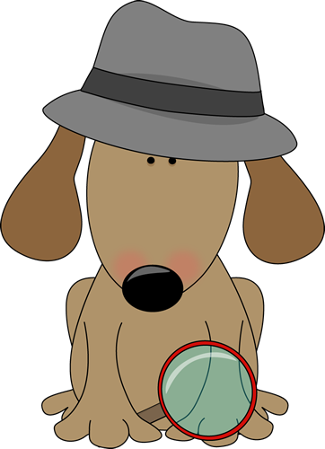

Controversy Investigation
Scientists don’t fully understand how language works in the brain, and there are many areas of controversy and debate. Throughout the semester, in groups of 2 or 3, you will:
- choose an area of controversy to investigate;
- learn about the controversy from two secondary sources;
- study the evidence yourself by reading primary sources;
- come up with an idea for a follow-up study that would contribute new relevant evidence; and
- present your findings and ideas to the class.

Project timeline
Friday, 9/4
Use the sign-up sheet to indicate which controversy you’d like to study. Max 3 students per group.
Friday, 9/11
Submit your written AI policy for my approval.
Submit a list of two secondary sources related to your topic (in APA style) as well as PDFs/links. At least one of these sources must be published in a peer-reviewed journal (e.g., review article, opinion piece). The other may be non-peer reviewed but must be approved by HRG (e.g., an episode of The Language Neuroscience Podcast).
Friday, 9/18
Study for Exam #1
Friday, 9/25
Recommendation: Meet to discuss your secondary sources and start identifying the evidence you’d like to study for yourselves.
Friday, 10/2
Submit a list of your four primary sources along with PDFs.
Friday, 10/9
Study for Exam #2
Friday, 10/16
Submit a filled-out summary sheet for primary source #1
Friday, 10/23
Submit a filled-out summary sheet for primary source #2
Friday, 10/30
Study for Exam #3
Friday, 11/6
Submit a filled-out summary sheet for primary source #3
Friday, 11/13
Submit a filled-out summary sheet for primary source #4
Friday, 11/20
Get my approval of the format of your final deliverable
Friday, 11/28
No class 🦃
Friday, 12/4
Work on your presentation
Tuesday, 12/8
Presentations!
Controversies
Here are some examples of controversies. If you would like to study a controversy other than the ones listed below, please email me ASAP. I will need to confirm that (i) it’s a real controversy and (ii) there exists enough relevant and accessible literature that you can do the project.
🔍 What is the function of Broca’s area?
(More info to be added)🔍 Does multilingualism protect the brain?
(More info to be added)🔍 Are large language models anything like humans?
(More info to be added)🔍 What is the status of infants’ language networks?
(More info to be added)Sources
You will identify two secondary sources relevant to your topic. One of these must be published in a peer-reviewed journal (e.g., review article, opinion piece). The other may be non-peer reviewed but must be approved by HRG (e.g., an episode of The Language Neuroscience Podcast).
Based on your secondary sources, you will identify the most important evidence on this topic, and the primary sources that report this evidence. You will then read the primary sources in order to evaluate the evidence for yourselves. All group members should read the paper independently and use Hypothes.is to annotate the paper and ask questions. If you still have questions after meeting in-person to try to figure it out, you may set up an appointment with me (ideally, all group members are present for this). Together, you will fill out a summary sheet to submit to me.
All references must be formatted in APA style.
Format
I’m open to a variety of formats for your final deliverable. Some examples: a traditional slide-based presentation, a short-form video for TikTok or Youtube, a longer educational video, a podcast episode, or a mock (scripted) debate among scientists.
Use of AI
In your small groups, you will come up with your own policy on AI use for your class project. I am open to a range of AI use policies, including no AI use at all, with two constraints:
- You are not allowed to use AI in ways that might jeopardize your progress towards the course’s learning goals. (I will be the ultimate judge of this.)
- You are not allowed to use AI to manipulate or create images of real people, even yourself.
Early in the semester, you will submit to me (a) a written statement of your group’s AI policy, including any specific tools you intend to use, and (b) a brief summary of why you decided on this policy, written by you (the humans). I will review your policy and either approve it or ask you to revise it.
You may amend your group’s AI policy throughout the semester, if your group members unanimously agree to do so. You must amend your policy and get my approval of the revised policy before using AI in a new way.
If your small group decides to allow any AI use:
- You must include an AI use statement with every single submission, detailing exactly how AI was used.
- You must keep records of all of your AI use, including prompts and AI output. I reserve the right to request to see these if there is a question about whether your use of AI is consistent with your group’s policy and/or is jeopardizing your progress towards the course’s learning goals.
- At the end of the semester, you must submit individual reflections (not generated by AI) on whether/how you think your group’s use of contributed to your learning in this class.
Image credit: MyCuteGraphics